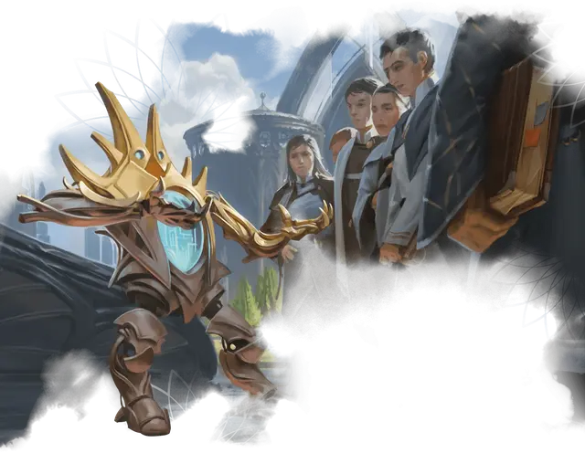

Проводник по кампусу Стриксхейвена
Strixhaven Campus Guide
Маленький Конструкт, законно-добрый

Класс Доспеха 17 (природный доспех)
Хиты 31 (7к6 + 7)
Скорость 30 футов
| мод | спас | ||
|---|---|---|---|
| СИЛ | 15 | +2 | +2 |
| ЛОВ | 14 | +2 | +4 |
| ТЕЛ | 13 | +1 | +1 |
| мод | спас | ||
|---|---|---|---|
| ИНТ | 10 | +0 | +0 |
| МДР | 12 | +1 | +1 |
| ХАР | 12 | +1 | +1 |
Навыки Проницательность +3, Убеждение +3
Иммунитет к урону яд
Иммунитет к состояниям глухота, истощение, окаменение, ослепление, отравление, паралич
Чувства слепое зрение 60 футов, пассивное Восприятие 11
Языки Общий, и ещё три любых языка
Опасность 1 (200 опыта)
Бонус мастерства +2
Особенности
Знания кампуса. Находясь в Стриксхейвене, проводник не может заблудиться ни магическими, ни немагическими средствами. Проводник также с преимуществом совершает проверки характеристик, совершаемые для определения местоположения существ или объектов в Стриксхейвене.
Понятная речь. Когда проводник говорит, любое существо, которое знает хотя бы один язык и может слышать проводника, понимает, что он говорит.
Необычная природа. Проводнику не нужны воздух, еда, питье или сон.
Действия
Мультиатака. Проводник совершает два Удара.
Удар. . Рукопашная атака оружием: +4 к попаданию, досягаемость 5 футов, одна цель. Попадание: 6 (1к8 + 2) дробящего урона.
Улыбаемся и машем. Каждое выбранное проводником существо, находящееся в пределах 30 футов от проводника, должно совершить спасбросок Мудрости Сл 11, иначе будет магическим образом очаровано проводником на 1 час.
Очарованная цель должна в свой ход перемещаться к проводнику, стараясь приблизиться к нему на расстояние 5 футов. Цель не перемещается в явно опасную местность, такую как костер или яма. Всякий раз, когда очарованная цель получает урон, она может повторить спасбросок, оканчивая на себе действие эффекта в случае успеха.
Цель, которая преуспевает в спасброске, невосприимчива к особенности «Улыбаемся и машем» любого гида в течение следующих 24 часов.
Бонусные действия
Нужны указания. Проводник совершает действие Помощь.
Описание
Обладая жизнерадостным нравом и умением ходить задом наперед, проводники по кампусу Стриксхейвена, водят на экскурсии толпы будущих студентов. Золотое и серебряное шасси проводника выполнены в форме, напоминающей звездные арки, окружающие Стриксхейвен. В их груди спрятаны голографические карты университетских кампусов, которые гиды используют для указания маршрута. Однако проводнику по кампусу редко нужны собственные карты, поскольку эти общительные автоматоны обладают даром находить что-либо в кампусе, часто появляясь в самое неподходящее время.